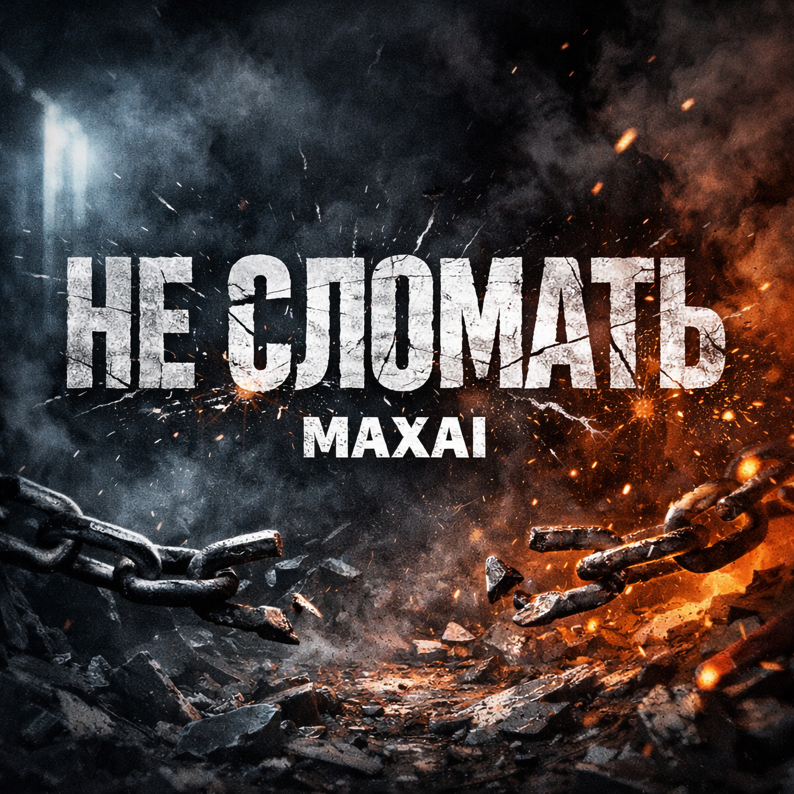

30.04.2026
Открылась дверь - вошёл наряд,
Массивные бляхи тускло блестят.
Стук по полу сапогами -
Помню, меня в них били ногами.
Свет режет глаз - кругом лишь лёд,
И каждый их шаг толкает вперёд.
Но внутри, сквозь грохот и дым,
Звучит мой голос - остался живым.
Стиснул зубы - тише дышу,
Я падаю - встану, дальше пойду.
Мир оглох - не слышит меня -
Скажу сам себе: "держись до конца".
Не сломать меня - не сломать.
Я живой - и буду вставать.
Пусть мир оглох - я закричу.
Не сломать меня - не сломать.
Не сломать меня - не сломать.
Я живой - и буду вставать.
Пусть мир оглох - я закричу.
Не сломать меня - не сломать.
Я вышел в мир - будто не тут,
Люди спешат - мимо вечно бегут.
А внутри - серый коридор,
Если придут - я им вновь дам отпор.
Я не про месть - хочу дышать,
Не превращаться в тень, не исчезать.
Память тяжела, как металл,
Я вынесу это - хуже видал.
Я не прошу понять меня,
Мне важно: чтоб не сломали меня.
Пусть накроет, снова темно -
Я буду идти. Мне не всё равно.
Не сломать меня - не сломать.
Я живой - и буду вставать.
Пусть мир оглох - я закричу.
Не сломать меня - не сломать.
Не сломать меня - не сломать.
Я живой - и буду вставать.
Пусть мир оглох - я закричу.
Не сломать меня - не сломать.
До прослушивания: напряжение и закрытость, ощущение коридора, где свет режет глаза, а шаги давят.
После прослушивания: собранность и ярость жизни: “я не исчезну”, “я встану”, “я закричу” — не для мести, а чтобы дышать.
«Не сломать» — манифест выживания и внутреннего упорства. Внешний мир может быть глухим и жестоким, память — тяжёлой как металл, но главный конфликт внутри: не дать сломать себя и не превратиться в тень. Припев повторяет одну формулу, как удар сердца: «Не сломать меня» — это не бравада, а решение.
Куплет 1 — “вошёл наряд”, сапоги, лёд, грохот: травматический кадр, где голос остаётся живым.
Предприпев — “падаю — встану”: внутренний договор с собой.
Припев — мантра стойкости, повтор дважды: закрепляет позицию.
Куплет 2 — выход “в мир”, но внутри тот же коридор; отказ от мести, выбор жизни и дыхания.
Предприпев — “мне важно: чтоб не сломали меня”: снова фиксация смысла.
Финальные припевы — усиление, как крик в лицо глухому миру.
Голос здесь — переживший. Он не ищет оправданий и не просит понимания. Он выбирает действие: идти дальше, держаться до конца, и если надо — кричать. Это песня про границу, которую нельзя переступать: меня не сломать.